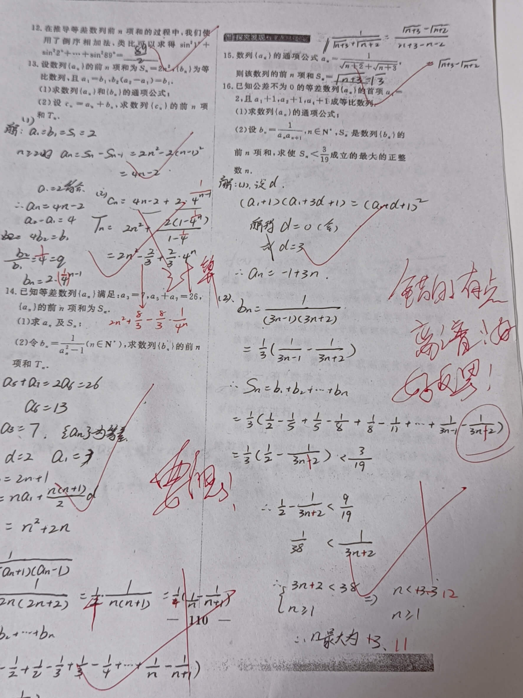

盘点那些奇怪的错误（二）
鸽了很久才更新的一篇文章
1.无语的数学老师
从上面这张图可知，数学老师的心理《 逐 渐 暴 躁 》
易得，拿到这份作业的我 [瑟瑟发抖]
2.灵动一动
我们都知道，已知前n项和求通项公式要分$n = 1$和$n \geqslant 2$
我直接
$$a_n = S_{n+1}-S_n$$
这不就不用考虑$S_{n-1}$所带来的$n \geqslant 2$的问题了
3.出乎意料的错误
原题：抛物线$y = \frac{5}{2} x^2$的准线方程为
其他做错的同学：$y = \frac{5}{8} x$，全然不顾是不是标准方程
我：先化成标准方程$x^2 =\frac{2}{5} y$，这样准线方程就是
$$y=-\frac{1}{5}x $$
全然不顾2p和准线之间是4倍的关系
Posted 2024-02-07 19:40 写bug的代码人
本文标签：
本文总阅读量?次
文章作者 写bug的代码人
文章链接 https://bugcoder.asia/article/020.html
声明 本博客中的所有文章均使用《署名-非商业性使用-相同方式共享 4.0 国际 (CC BY-NC-SA 4.0)》协议授权，转载需注明来源，所有代码均使用MIT开源协议